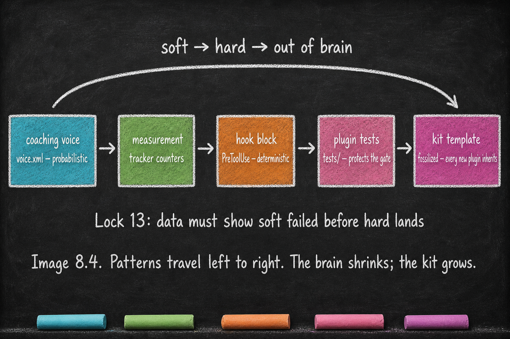

Soft → Hard Migration
Essay 8.4 — From Apprentice to Architect, Part 4 of 9.
Essay 8.3 closed the brain inventory at three months — a small brain over a large knowledge layer with a narrow memory. That shape is the outcome. The mechanism that produces it is the migration of behavioral controls from soft form to hard form within the plugins themselves. This essay opens that mechanism. ⓘ
The graduation through the stages of the job-maturation arc (Essay 8.2) — deep single-cycle, to multi-cycle .md plan, to multi-cycle .yaml plan, to plugin form of a job — is only one of the patterns by which the seed agent grows. The other — equally important — is the migration of behavioral controls from soft form to hard form within the plugins themselves. ⓘ
The cleanest concrete migration to study in the prototype is the evolution.md word cap — a size discipline that lives soft almost everywhere (a row in the brain’s size-limits table, honored through CONDENSE compression) and hard in exactly one place, where the soft form could not hold: a PreToolUse block (a Claude Code hook event that fires before any tool is called, capable of refusing the call) that refuses any edit pushing a plugin’s docs/evolution.md past its cap. ⓘ
A lawyer’s seed running matter-intake jobs will see the same migration shape applied to its own domain: a [CONFLICT-CHECK] voice fires probabilistically at the start of each new-matter cycle, the operator notices it being skipped under pressure, the operator (with the seed) hardens it into a PreToolUse block that refuses tool calls until the check returns clear. Same arc; different concern. The lawyer’s seed earns hardening evidence the same way the prototype did — measurement first, then friction. ⓘ
The Evolution Cap — A Worked Migration
Every size limit in the seed starts soft. The brain’s size-limits table names a cap for each managed file — the root brain, the subdirectory CLAUDE.md files, plans, memory entries — and the discipline that holds them there is CONDENSE: compression on cycle close, migration of overflow into knowledge files. For most of those files the soft form holds, because the files grow only when cycles deposit content and CONDENSE runs before the next cycle opens. ⓘ
One file kept breaking the soft form: docs/evolution.md, the historian’s narrative from Essay 7.5. It is auto-injected as primary memory on every plugin unlock, and it grows on a structural schedule — every unlock appends to it. A discipline that relies on remembering to compress loses to a file that grows by mechanism. So the cap hardened: a PreToolUse hook now intercepts every edit to a plugin’s docs/evolution.md, computes the post-edit word count, and refuses the edit if it would push the file past the cap. The block voice names the cap and the current count, and routes the overflow — consolidate older dated sections into the sibling files (docs/decisions.md, docs/lessons.md), then add the new entry. What was once a remembered discipline is now mechanism. ⓘ
The Cost Ladder — Voice, Hook, Plugin, Template
The pattern beyond this case — what this essay calls the cost ladder — is consistent with the Lock-13 soft-vs-hard discipline that Essay 7.3 names the over-engineering veto. In this prototype, new behavioral concerns start as voice — soft, probabilistic, ignorable. If measurement shows the voice failing to hold, the operator climbs to hook in an existing plugin — a PreToolUse guard inside the plugin whose concern the pattern belongs to. If the pattern needs its own state or crosses an existing plugin’s boundary, it earns a new plugin. Your seed can enter the ladder at any tier if prior evidence already justifies the cost — the order is a default, not a mandate. The prototype codifies this restraint as a named lock discipline (the over-engineering veto): no new hard gate hardens before measured cycles demonstrate the soft form is failing. ⓘ
The deepest migration is the meta-pattern fossilizing into the kit itself. The evolution cap didn’t stay a one-plugin fix; the historian, its capped docs/evolution.md, and the overflow siblings are standard organs of the plugin kit, so every new plugin is born carrying the hardened discipline. Brain_guard’s cycle-1 universal disciplines (verify-100%-before-bonus, subagent-spot-check, condense-not-deletion, job.sh create-only in multi-cycle) made the same trip — from one cycle’s lesson to a rule every cycle now obeys, codified into .claude/knowledge/opevc/ and inherited by every new job. ⓘ
Two Axes, Same Shape
This soft-to-hard migration mirrors the job-maturation arc one level up. Each stage of the maturation arc maps to a hardening tier. The collaborative learning of an early-stage job becomes the codified .md plan once the work repeats; the matured plan’s shape seeds a .yaml injected at phase entry once the pattern stabilizes; the most-repeated patterns harden further into plugin form. Every step is voluntary, and every step trades inspectability for friction. The brain grows along both axes simultaneously: jobs mature upward; controls migrate inward. The limit on both axes is the same: friction plus evidence, not mathematical impossibility — a careless operator can ship a hook without tests; a missing hook registration is silently inert. The architecture makes the careful path easier than the careless one; it does not refuse the careless path. ⓘ

A pattern travels from voice to hook to template, and the cost ladder keeps the brain honest about which controls have earned the cost of hardening. The next essay opens the inverse question: which limits look hard but are actually CONDENSE discipline, and which earn their gates.
Essay 8.4 — From Apprentice to Architect, Part 4 of 9.
Previous: Essay 8.3 — What Lives in the Brain After Three Months — the prototype as ground-truth inventory. Next: Essay 8.5 — What’s Enforced vs What’s Discipline — the honest accounting of size caps.
Comments